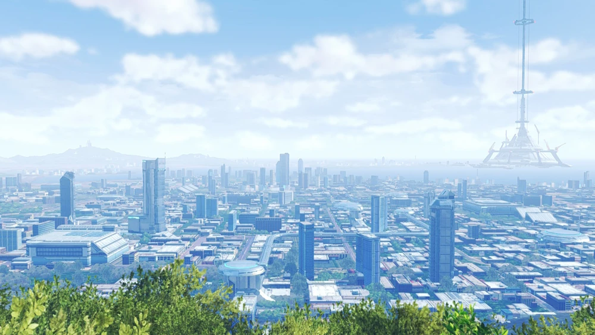

Chapter 1
A flashback showing Rex, Shulk, and Z battling Alvis—now referred to as Alpha—opens the game. Alpha's dominance pushes back Shulk and Rex's fruitless attempts to convince him to change his ways.
In the present, Matthew and A are searching for refugees in the city. They pass through Vermilion Woods till they detect a City Iris signal on their radar. They get there too late, but they follow the source after hearing fighting. When they arrive, they see Glimmer, an Agnian soldier, and Nikol, a Kevesi soldier, engaged in combat. Two Consuls, Q and R, show up and fight Matthew and A after Matthew breaks up the altercation. On the battlefield, A kills them both and takes out the Ferronises' two Flame Clocks. Nikol and Glimmer have now inherited Matthew's Ouroboros powers because he used them in close proximity to them.
Matthew takes Nikol and Glimmer in when they are released from the Flame Clocks. But Glimmer flees in pursuit of a colony because she cannot accept that she is no longer an Agnian soldier.
Chapter 2
Matthew, A, and Nikol decide to go look for her. Glimmer is taken to a camp for interrogation by Shulk, who leads a gang of Liberators, City refugees who want to stop Moebius. But after she escapes, she sees a big Ferronis approaching the camp. Since she is Ourorboros and no longer protected from Moebius, she tries to reason with the Consul in charge of the marching Ferronis but is unsuccessful. She is rescued by Shulk, who informs her that this is the real character of the Consuls.
Matthew and the group get there in time to battle the Ferronis with Shulk. In order to strengthen himself, the Consul, W, summons another Ferronis and merges the two into his body using his power. The party manages to stay up in spite of this. After Rex jumps in to assist, Matthew, Shulk, and Rex manage to kill W and destroy the Ferronis Flame Clocks at the same time. The group is taken to the neighboring camp by Rex and Shulk.
Chapter 3
They make the decision to depart for Colony 9, the Liberators' operational base. The group is shown to their ready-made lodgings upon arrival. But before they sleep, they see Riku, who has converted Dunban's home into a studio. They then head back to their camp to recuperate.
Matthew learns the following morning that the bodies of a group of City survivors were discovered by a Liberator squad. Eager to learn more, Matthew looks through the possessions of the deceased survivors to discover hints as to where his sister may be. He quickly heads to the location where the survivors were discovered after seeing a bracelet that belonged to Na'el. They choose to camp there for the night after discovering nothing except evidence of combat.
A talks to Shulk and Rex about their beginnings. They clarify that they are a component of the Trinity Processor called Ontos. Sometime after the Fog King had been defeated on Alcamoth, Shulk had discovered the Ontos core washed up on the shore of Colony 9. That core served as Origin's main power source and construction block. Then, Shulk says that Melia told him about it and described it as "a gift from Alvis". But Ontos escaped, and Alpha—a creature with twisted ambitions to exterminate Aionios and explore a different world—was created. Coincidentally, Na'el discovered its core washed ashore. He was able to utilize Na'el as an avatar and start his plot to move the City's residents to his new world because she had the Ontos core and harbored animosity toward the people of Keves and Agnus. Ghondor leaps in front of Na'el to save her from N's attempt to destroy her. Consequently, this led to the destruction of the city. But because of N's overwhelming strength and his subsequent confrontation with Matthew, Alvis' conscience was freed from Alpha's bonds, causing them to split in two, forming A. They explain that A is the expression of Ontos's conscience, which Alpha does not have. The Trinity Processor's design is what gives them their appearance: Logos is the male persona, Pneuma is the feminine, and Ontos, as Rex puts it, is somewhere in between.
As the conversation comes to a close, an Alpha-controlled Na'el enters the scene.
Chapter 4
As Na'el, Alpha tries to convince Matthew to accompany her. Confounded, Matthew finds it difficult to comprehend Na'el's malevolent nature. He disregards the party's insistence that she is Alpha until Alpha eventually loses patience and lashes out. Before N appears and battles Alpha himself, they all battle Alpha. Matthew is informed by the party that N is not their opponent and that Moebius is not the main aim as long as Alpha is around. After sustaining significant harm, Alpha departs and informs the group that she will be waiting. Matthew is angry with N for killing Ghondor, so he leaves. Origin is activated when Prison Island suddenly starts to light.
Following their return to Colony 9, Shulk and Rex explain to Matthew, Glimmer, and Nikol about the beginnings of Aionios and how their worlds were once one and the same. This universe was home to many people and claimed nearly unimaginable prosperity. However, the globe was divided into two distinct locations after one man, Klaus, ruined everything. Alrest was one, and the Bionis world was the other. New life was created as the two split universes started to change on their own. But there were also fights over scarce resources and tyrannical empires, so it wasn't all calm. However, in spite of everything, the worlds were ultimately able to achieve harmony because of the many generations of people who fought for the future.
Sadly, this harmony was short-lived. The two shattered worlds wished they were back to their former selves. Shulk added that the Annihilation Events that take place throughout Aionios are tiny foreshadowings of this. They were made of opposing kinds of matter, though, and if they were recombined, they would melt into light and cease to exist.
The two worlds collaborated to create Origin, a database of information about everything, including memories and souls, in order to avoid disaster. The Origin mechanism would enable the revival of the worlds even if they were destroyed. The Trinity Processor core Ontos, or Alpha, is at the center of Origin's operations. But Alpha planned to destroy everyone from the two worlds because he thought their presence was outdated. They go on to say that Alpha is now assembling strength and getting ready to leave for the Ark, which is the center of Origin, together with the new lives—those of the City people—that have gathered there in order to transport them to another world.
Linka wonders why Alpha would pick Na'el as the place to inhabit. According to Rex, this is probably because Na'el has Agnian ancestry and Core Crystals are dominant in terms of inherited qualities. Rex speculates that it's because she has what he lacks or that he was hurt during their altercation. A goes on to say that Na'el's emotions play a role as well, which is probably the most important part of all. Alpha finds her feelings of distress toward the world to be the ideal source of material. Because of this, Na'el is far more essential to Alpha than A.
After discussing their options, the group decides that the best way to get to Origin, where Alpha is waiting, would be via Prison Island. To get there, though, they must collect the materials required to construct an ether lift so they can go vertically. Furthermore, Rex and Shulk firmly reject Nikol and Glimmer's desire to accompany everyone to Origin, declaring them unfit to challenge Alpha and ordering them to remain in the Colony. Naturally, they decline, and the party asks Riku to increase their Ouroboros power. They need some sort of "Trigger" to power up, Riku tells them. Shulk and Rex offer to battle Nikol and Glimmer at the Gotrock Oracle Ruins in order to set off this trigger. After some difficulty fighting the two, Nikol and Glimmer manage to increase their Ouroboros power and defeat Shulk and Rex, therefore enhancing the Ouroboros Stone. They are then permitted to accompany Shulk and Rex to Origin. After resolving both issues, the group retires for the evening, during which Rex and Glimmer have a brief conversation.
The group departs for Prison Island in the Black Mountains early the following morning. Matthew remarks along the way that, despite the fact that this is his first time seeing Origin, everything feels strangely familiar. He is surprised when A tells him that Origin metal was used to make his Gauntlets. They eventually reach the Prison Terrace shortly after that. N greets them and explains that he has been attempting to assassinate Matthew because he is the one keeping Na'el alive. The group confronts him, and during their confrontation, N and Matthew share a recollection from Origin about N's assault on the City and Alpha's role in it.
Chapter 5
The group enters a memory from Origin. They are on Earth just before Klaus' experiment takes place, in the year 20XX. The gathering enjoys the view of a vast metropolis with tall structures, including the Rhadamanthus Beanstalk, from the backyard of a house with a garden. Na'el used to perform this song back in the day, and Matthew recognizes it when he hears it on the piano. Unaware of the global conflict raised by the broadcasts from a nearby radio, he pursues the sound and locates Na'el, who reveals that if they carried out Alpha's plan, the world might be like this. A then takes Na'el to the Land of Morytha, where he can see the results of Klaus' experiment and what Alpha's new world would look like if his plan worked. Matthew convinces her that if she kept considering the Kevesi and Agnians as "things" deserving of no more respect than Moebius, she would be no different from him. If they were only given the option, they could live like the City's citizens. Before Alpha takes back control of her and vanishes, Na'el consents to join the party and stop Alpha.
After that, the group is returned to the Ark, where Alpha maintains that conscience serves no use for the Trinity Processor and that the future does not require the possessions of the past. The group rejects his objectives, and Shulk and Rex fight Alpha because they remember that Klaus trusted them with the future. Alpha eventually tries to draw Matthew's soul in, but he fights back and remains inside his body until N steps in to stop the conflict. For the time being, Matthew says he's happy to have N by his side. Alpha transforms into his true self, a massive humanoid entity with a mask-like, empty face. He is armed with a bigger, more potent Monado. Matthew uses N's Sword of the End to unleash the full power of Ouroboros, transforming all six party members into a humanoid warrior that resembles Noah's Ouroboros form and revealing a translucent incarnation of Pneuma's core on his gauntlet. They permanently destroy Alpha with this form. Matthew responds in the affirmative when Alpha asks if he is happy with his choice. Alpha gives a smile before disappearing.

As Shulk and Rex start to wane, they disclose that Origin needs a new avatar—both themselves and A—in order to maintain Aionios stable in the absence of Alpha. The gang disagrees, but Rex tells them that when the worlds are restored, they will all see each other again. Rex and Shulk enter a wide rift after giving their life power to their respective kids, Glimmer and Nikol. A responds simply that his and Rex's hopes have always been a constant in the passage of time when Shulk asks them whether they had anticipated the present course of events as they enter the gap.
The Cent-Omnia Region is destroyed when Origin sinks into the ocean. Matthew responds that he and his supporters would continue to fight for the future, implying that N may eventually do the same thing himself, after N tells Matthew that Moebius will not give up on their endless now.
Epilogue
With the intention of restoring the world and locating further City survivors, Matthew gets ready to leave for the remainder of Aionios back at the new City the Liberators have built. After the group bids farewell, Matthew leaves.
Following Noah's victory over Z, a post-credits scene shows Aionios separating into the two original worlds from space. The harm caused by Klaus' experiment is finally repaired as Origin lights in both realms and they unite once more into a single reality. A little light can be seen piercing the atmosphere of the new world.